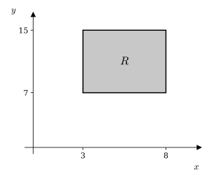
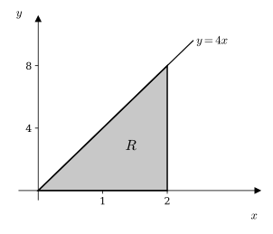
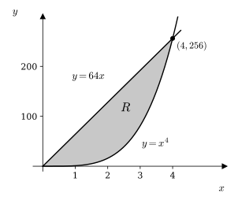

Double Integrals and Area
When the function being integrated is \(1\), the double integral gives the area of the region \(R\). Think of it as the volume of a solid with height \(1\) over \(R\): its volume equals the area of its base. Through three examples, we will see why.
Area of a Region
An Example
Let \(R\) be the region in the \(xy\)-plane described by \(3 \le x \le 8\) and \(7 \le y \le 15\). Evaluate the double integral below. Then draw a graph and explain the meaning of the calculation. Use your knowledge of geometry to confirm the result.

The region is a rectangle with width \(8 - 3 = 5\) and height \(15 - 7 = 8\). Its area is \(5 \cdot 8 = 40\), which matches the double integral.
An Example
Let \(R\) be the region in the \(xy\)-plane bounded by the line \(y = 4x\), the \(x\)-axis, and the vertical line \(x = 2\). Evaluate the double integral below. Then draw a graph and explain the meaning of the calculation. Use your knowledge of geometry to confirm the result.

The region is a triangle with base \(2\) and height \(8\). Its area is \(\frac{1}{2} \cdot 2 \cdot 8 = 8\), which matches the double integral.
An Example
Let \(R\) be the region in the \(xy\)-plane enclosed by \(y = 64x\) and \(y = x^4\). Evaluate the double integral below. Draw a graph and explain the meaning of the calculation.
First find where the curves meet: \(x^4 = 64x\) gives \(x = 0\) or \(x^3 = 64\), so \(x = 4\). Between these, the line \(y = 64x\) is above the curve \(y = x^4\).

The double integral gives the area of the region between the two curves, \(307.2\) square units.